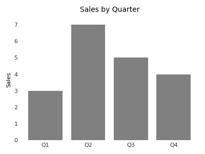
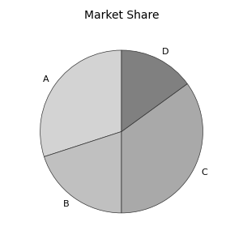
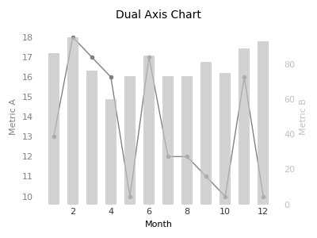

About
I am currently pursuing an M.Sc. in Information Technology at Universiti Teknologi MARA, focusing on Topic Modelling and Sentiment Analysis on TikTok for Social Media Brand Management. I hold a B.Sc. in Computer Science and have developed key projects, including a virtual queuing mobile app and a data management system.
My experience includes an administrative internship and participation in a national Datathon, with skills in programming, data visualization, and academic research. I have co-authored a few research papers that are currently under review for publication.
Education
2024 – Current
M.Sc. Information Technology, Universiti Teknologi MARA (UiTM)
Thesis Title: A Study on TikTok User-Generated Content through Descriptive Metadata and Advanced Modelling Techniques
Status: Waiting for Defense Research Proposal
2020 – 2024
Bachelor of Computer Science (Hons.), Universiti Teknologi MARA (UiTM)
Final Year Project: Developed a mobile app to reduce long physical queues and crowded waiting areas with estimated waiting times, real-time tokens, and automatic queuing.
GPA: 3.48
2019 – 2020
Matriculation Computer Science, Kedah Matriculation College
Completed the Malaysian Matriculation Program (1-Year, Module 2), with a focus on Mathematics, Chemistry, Physics, and Computer Science. Developed strong analytical and technical skills through a rigorous curriculum and continuous assessments, preparing for higher education in STEM fields. CGPA: 3.63
Teaching Experience
Oct 2024 – Current
UiTM Postgraduate Teaching Assistance (UPTA), Universiti Teknologi MARA (UiTM)
Served as a UiTM Postgraduate Teaching Assistant (UPTA), supporting undergraduate education through tutoring, conducting practical classes, and assisting with teaching-related tasks for up to 6 hours weekly. This role enhanced my skills in academic instruction, communication, and time management.
Working Experience
Nov 2024 – Current
Special Services, Universiti Teknologi Petronas (UTP)
Conducted research and development related to the center's focus, worked independently with occasional input from supervisor, handled technical and administrative tasks like preparing reports, presentations, and proposals, arranging appointments, and maintaining IT systems.
Sept 2023 – Jan 2024
Administrative Intern at OTC Training Centre Sdn Bhd
Managed administrative tasks, coordinated client communications, handled registration and logistics for training sessions, and developed a new system that improved workflow. Assisted with video editing, digital marketing content creation, and copywriting.
2021
Pusat Khidmat Merbok Data Management System
Developed a web application to streamline data retrieval, visualize data, and track data flow using HTML, CSS, Bootstrap, PHP, and SQL.
Project Value: RM2,000
Data Science Competitions
2021
Malaysia Data Innovation Talent x DOSM Virtual Datathon
Participated in a data analysis and problem-solving competition, applying skills in data cleaning, data visualization, statistical analysis, and machine learning to tackle real-world problems.
2024
Curiosity Cup 2025
Participated in a global data analysis and problem-solving competition, leveraging skills in data preparation, visualization, statistical analysis, and SAS software to generate actionable insights and tackle analytical challenges.
Skills
| Languages | Strong reading, writing, and speaking competencies in English, Bahasa Malaysia |
|---|---|
| Coding | Python, SQL, PHP, Java |
| Databases | MySQL, Firebase |
| Web Development | HTML, CSS, Bootstrap 5, Javascript, Latex |
| Visualisation | Tableau, Power BI, SAS |
| Misc. | Academic Research, Teaching Training, Consultation |
Research Publications
R.Tariq, P.Isawasam, L.Shamugam, M.A.H.A.Asmawi, N.A.N. Azman, and I.A. Zolkepli, "Exploring social media research trends in malaysia using bibliometric analysis and topic modelling", EAI Endorsed Transactions on Scalable Information Systems, 2024, [Accepted].
Featured Visualizations
Horizontal Bar Chart
Pie Chart
Horizontal Dual Axis Chart
References
Ts. Dr. Pradeep Isawasam
Master Supervisor
Universiti Teknologi MARA
pradeepi@uitm.edu.my